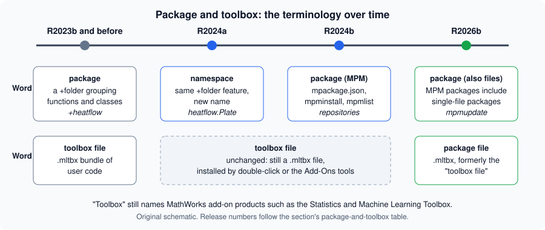

Packages and the MATLAB Package Manager
|
This content was generated with the assistance of AI and should be verified against the official documentation before being relied on in production. |
Written against MATLAB R2026b. The MATLAB Package Manager (MPM) is part of MATLAB and needs it: GNU Octave has no mpminstall or the other mpm functions (the session below confirms it) and its own, unrelated package system (the pkg command, for Octave Forge packages). So every MATLAB statement on this page is checked against the R2026b documentation and every listing is marked "not run here". The release in which each function arrived is taken from the "Since" line of its reference page.
This page is about distributing code: bundling it so that other people, or other computers, can install it, with its dependencies, and keep it up to date. It starts with the vocabulary, because two of the words involved (package and toolbox) have changed meaning in recent releases and older material uses them in the old way.
The words "package" and "toolbox" over time
The section’s overview has a table of the two words (see the package and toolbox table). This page expands it into a timeline.

The figure is an original schematic, not a MathWorks figure.
| Release | What changed |
|---|---|
R2023b and before |
A package is a folder whose name starts with |
R2024a |
The |
R2024b |
MATLAB Package Manager introduces packages in a new sense: a root folder with a definition file, installed by |
R2026b |
A package can be built as a single installable file with the extension |
Two consequences. First, "package" is ambiguous in code written between R2024a and now: a +folder is a namespace in current documentation but still called a package in older books, while the thing you install with mpminstall is a package in the new sense. Second, a .mltbx file made before R2026b is still installable: the release notes state that the package manager is backward compatible with toolboxes created before R2026b, which "are supported and installed as packages". For the MathWorks add-on products see Toolboxes and Add-On Products.
What a package is
A package is, in the documentation’s words, a collection of MATLAB code, related files and a package definition file that defines the package identity and its dependencies. Its layout:
-
a root folder that holds the files and the member folders of the package;
-
inside it a
resourcesfolder, which holds the package definition filempackage.json.
The definition file stores identifying information (the package name, the version and a unique identifier), descriptive information (a summary, the provider, the MATLAB releases it is compatible with), and package properties (its status, the member folders and the dependencies). In MATLAB you work with it through a matlab.mpm.Package object, whose properties are the same: Name, DisplayName, Version, Summary, Tags, Readme, Provider, Folders, Dependencies, ReleaseCompatibility, SupportedPlatforms, FormerNames and ID, plus installation properties such as Installed, Editable, DirectlyInstalled, PackageRoot, InstalledDependencies and MissingDependencies. The JSON keys of mpackage.json are the property names in lower camel case: name, version, id and schemaVersion are required, and displayName, summary, tags, readme, provider, folders, dependencies, releaseCompatibility and supportedPlatforms are optional. The schema itself has versions: 1.0.0 (R2024b), 1.1.0 (R2025a, a languages entry for each folder) and 1.2.0 (R2026b, adding readme, tags and supportedPlatforms). A file of any schema version can be used in any release since R2024b, with newer features disabled in older releases. A definition for heatflow could look like this (based on the mpackage.json reference page; the identifiers are placeholders, and the dependency is the same placeholder as in the project definition on Projects and Source Control):
{
"name": "heatflow",
"version": "1.0.0",
"id": "00000000-0000-0000-0000-000000000001",
"displayName": "Heatflow",
"summary": "Two-dimensional heat diffusion on a plate",
"provider": {"name": "Heatflow maintainers"},
"dependencies": [
{"name": "unitsKit", "compatibleVersions": ">=1.5.0", "id": "00000000-0000-0000-0000-000000000000"}
],
"releaseCompatibility": ">=R2024b",
"schemaVersion": "1.2.0"
}Not run here (no MATLAB). The file sits in src/resources/mpackage.json, because src is the package root in the layout used on this page. There is no folders entry: installing the package adds the root folder src to the path, which is enough to make the heatflow namespace in src/+heatflow visible, and a namespace folder must not itself be on the path. folders lists further member folders relative to the root (each an object with a path and, from schema 1.1.0, languages). compatibleVersions takes a range such as ">=3.1.0 <4.0.0", and releaseCompatibility takes a release or a range such as ">=R2024b" or "R2024b - R2025b". MATLAB reads manual edits only while the package is editable, so the usual route is still the matlab.mpm.Package object or the interactive tool.
When a package is installed, MPM copies the code and supporting files into the default installation area, installs the packages it depends on, and adds the root folder and all member folders to the MATLAB path. A package built from a folder with mpmcreate is different: it is "installed in place", that is its files stay in the folder you gave and the package is editable, which is what you want while developing it.
Package names start with a letter, followed by letters, digits or underscores, and are at most namelengthmax characters. Versions follow semantic versioning in the form major, minor, patch (1.0.1). The identifier is a UUID that stays the same across versions of the same package, and it distinguishes packages that have the same name.
The MPM functions
| Function | Use | Since |
|---|---|---|
|
Creates a package from a folder; creates the |
R2024b |
|
Installs a package folder, or one or more packages by name from the known repositories (the latest version by default), together with their dependencies, and adds them to the path. Options include whether to install dependencies, whether to add folders to the beginning or the end of the path, |
R2024b |
|
Uninstalls a package. Dependencies that were not installed directly and are no longer used by another package are uninstalled too. |
R2024b |
|
Lists the installed packages, or those whose name, display name, former names, summary or readme contain a keyword (case-insensitive); name-value arguments filter by name, identifier or version range. |
R2024b |
|
Searches the known repositories for packages. |
R2024b |
|
Updates installed packages to the newest versions, or to the newest in a version range. Dependencies are updated only when the new version needs it. An editable package cannot be updated and causes an error. |
R2026b |
|
Manage the list of known repositories. |
R2024b for |
(The Since column is the "Since" line of each function’s reference page; for the three repository functions only mpmAddRepository was opened.)
A development session for heatflow, with the src folder as the package root:
% create the package definition in place (editable)
pkg = mpmcreate("heatflow", fullfile(pwd, "src"), ...
Version="1.0.0", ...
DisplayName="Heatflow", ...
Summary="Two-dimensional heat diffusion on a plate");
% on another machine, from a package file or a repository
pkg2 = mpminstall("heatflow"); % latest version from the known repositories
mpmlist("heat") % lists installed packages mentioning heat
mpmupdate(pkg2) % R2026b: update to a newer version
mpmuninstall("heatflow")Not run here. mpminstall asks for confirmation before it installs (the documentation’s examples show a prompt of the form "Do you want to continue? [YES/no]"), so a script that installs packages in automation needs the non-interactive options listed on the reference page, which are not covered here.
The check below is the only code on this page that was run. In Octave 11.3.0 neither the MPM functions nor the MATLAB sense of package exist, while its own pkg command does:
fprintf("exist mpminstall: %d\n", exist("mpminstall"));
fprintf("exist pkg: %d\n", exist("pkg"));Octave 11.3.0 output:
exist mpminstall: 0
exist pkg: 2(exist returns 0 for a name that is not found and 2 for a file.)
Sources: mpmcreate, mpminstall, mpmlist, mpmupdate, mpmuninstall, mpmsearch, mpackage.json, mpmAddRepository
Repositories
A repository is a designated location from which packages are installed. MATLAB keeps a list of known repositories; mpmsearch and mpminstall look there. Locations the documentation mentions:
-
MathWorks File Exchange, which since R2026b is a package repository on the list of known repositories by default. You can remove it with
mpmRemoveRepositoryand add it again withmpmAddRepository;matlab.mpm.FileExchangereturns its address. Packages on File Exchange can also be searched and installed interactively with the Add-Ons panel (since R2026b). -
Folder-based repositories: a shared folder holding packages, for a team or an organisation (Distribute Packages Using Folder-Based Repositories).
-
A MATLAB package repository service, which sits between MPM and an organisation’s artifact manager such as JFrog Artifactory (Distribute Packages Using MATLAB Package Repository Service).
For heatflow, a team that develops it privately would put the package files in a folder repository on a shared drive and each user would run mpmAddRepository("team", "\\server\matlab-packages") once (the argument forms are the documented repoName,repoLocation; the path is a placeholder). Not run here.
Dependencies and versions
If package A depends on package B, which depends on C and D, installing A installs B, C and D when they are missing. Uninstalling A removes the ones that nobody else uses, where "unused" means not installed directly and not required by another installed package. A dependency names a package and a version constraint, such as "at least 1.5", and the project TOML format (see Projects and Source Control) uses the same form to declare the packages a project needs.
Versions are semantic. When you publish a new version of a package, keep the same identifier, increase the version, and publish it to the repository (the documentation has a Publish New Version of Package topic, not opened for this page). Pitfalls with versions: an mpminstall that would break an installed dependency stops unless you pass Force=true, and then it overwrites the installed dependency even if that breaks another installed package, which the release notes describe as a deliberate override.
Package files (.mltbx) and the older add-on functions
In R2026b a package can be built as one .mltbx file, which "an end user can install by double-clicking". A file made with the interactive tool (Interactively Create and Share Packages) can bundle code, data, apps, examples and documentation, and can include the dependencies to be installed with it. The matlab.addons.toolbox.ToolboxOptions object gained properties for the package name, the package dependencies and the readme, to build such files programmatically.
The older functions matlab.addons.install, matlab.addons.uninstall, matlab.addons.toolbox.installToolbox and related ones are marked not recommended since R2026b: the reference page for matlab.addons.install says "Use mpminstall instead". The release notes add that there are no plans to remove them, and give replacements:
| Older call | Replacement |
|---|---|
|
|
|
|
|
|
|
|
Older code that uses the matlab.addons functions keeps working, so there is no need to rewrite scripts in a hurry, but new tooling should use the mpm functions.
The Add-Ons panel and the Add-On Explorer
The interactive way to find, install and manage add-ons is the Add-Ons panel (the older name is the Add-On Explorer, which you will find in books and tutorials). Add-ons are products, apps, packages and more, from MathWorks and from the user community, and the ones that you share through File Exchange are discoverable there. For programmatic search and install the documentation points to the package manager. Since R2025a the panel can also install add-ons from folder-based repositories.
Source: MATLAB documentation: Add-Ons
The recommended workflow
The documentation’s workflow for software development has five stages. They are the chain that this section’s pages follow:
-
Create and configure a TOML project to organise the files, the path and the dependencies (Projects and Source Control).
-
Set up source control: initialise Git and connect a remote.
-
Build a package: bundle the code, define the dependencies; interactively from a TOML project, or programmatically with
mpmcreate. -
Upload to File Exchange or another repository.
-
Install the shared package from the repository, with
mpminstallor the Add-Ons panel.
Before you build, the documentation advises organising the code in one root folder with subfolders for the source code, the tests and the examples. For heatflow:
heatflow/
matlab.toml project definition (TOML)
buildfile.m build automation
src/
resources/
mpackage.json package definition
+heatflow/ the namespace: Plate, Simulation, laplacian, ...
tests/ tests (not packaged)
examples/ runHeatflow.mHere the +heatflow folder is a namespace and src is the package root. Whether tests and examples are packaged is a choice of the member folders in the definition. Building the package can be part of an automated build (see Build Automation with buildtool and Continuous Integration), and a package should not hold secrets or machine-specific paths (see Secrets and Protecting Code).
Pitfalls
-
Reading old material with the old meaning. "Package" in a pre-R2024a book means a
+folder; "toolbox" means a.mltbxbundle or a product. See the timeline. -
Mixing the two senses in one design. A package root folder is not the same thing as a
+folder. The namespace is code organisation inside the package; the package is the distribution unit. -
Using the MPM on an older release. Before R2024b the
mpmfunctions do not exist, sompminstallstops with "Unrecognized function or variable 'mpminstall'.", identifierMATLAB:UndefinedFunction. CheckisMATLABReleaseOlderThan("R2024b")in a script that must run on both. -
Code that disappears after
mpmuninstall. Once heatflow is uninstalled its folders leave the path, and a call such asheatflow.laplacian(T,dx)stops with "Unable to resolve the name 'heatflow.laplacian'.", identifierMATLAB:undefinedVarOrClass. -
Updating an editable package.
mpmupdateraises an error for a package created in place; install the package from a repository to update it. -
Forcing an install.
Force=truecan break installed packages; useDryRunfirst (R2026b). -
Unpinned dependencies. A dependency without a version range accepts any version; give a lower bound.
-
Name clashes. Two packages with the same name but different identifiers are different packages; use the identifier to distinguish them (the documentation has a topic on package identifiers).
-
Confusing the package with the project. A project (
matlab.toml) organises development; a package (mpackage.json) is what you ship.
Where older books differ
The older books were written before any of this. They call a +folder a package, which is the old meaning; they may describe toolboxes only as MathWorks products, and they cover no package manager, no mpackage.json, no File Exchange as a repository. Their code that uses +folders is still valid (the feature is now called a namespace), and the advice to put reusable code on the path remains true, but distribution today means a package, and the path is managed by MPM or by a project.